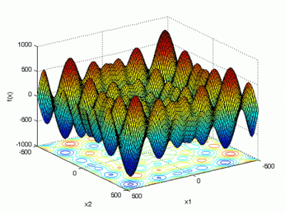

Schwefel¶
-
struct
pagmo::schwefel¶ The Schwefel problem.

This is a scalable box-constrained continuous single-objective problem. The objective function is the generalised n-dimensional Schwefel function:
\[ F\left(x_1,\ldots,x_n\right) = 418.9828872724338 n - \sum_{i=1}^{n} x_i\sin \sqrt{|x_i|}, \quad x_i \in \left[ -500,500 \right]. \]The global minimum is in \(x_i=420.9687, i = 1..n\), where \( F\left( 420.9687,\ldots,420.9687 \right) = 0 \).Public Functions
-
schwefel(unsigned dim = 1u)¶ Constructor from dimension.
Constructs a Schwefel problem
- Parameters
dim – the problem dimensions.
- Throws
std::invalid_argument – if
dimis < 1
-
vector_double
fitness(const vector_double&) const¶ Fitness computation.
Computes the fitness for this UDP
- Parameters
x – the decision vector.
- Returns
the fitness of
x.
-
std::pair<vector_double, vector_double>
get_bounds() const¶ Box-bounds.
It returns the box-bounds for this UDP.
- Returns
the lower and upper bounds for each of the decision vector components
-
inline std::string
get_name() const¶ Problem name.
- Returns
a string containing the problem name
-
vector_double
best_known() const¶ Optimal solution.
- Returns
the decision vector corresponding to the best solution for this problem.
Public Members
-
unsigned
m_dim¶ Problem dimensions.
-